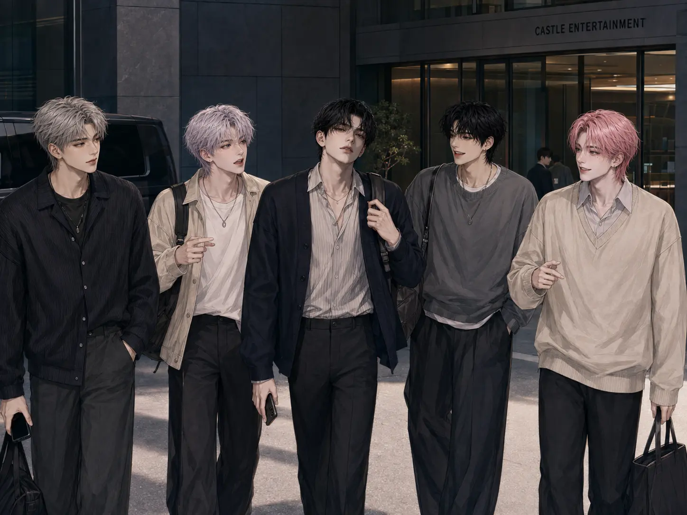

OFFICIAL BEHIND ARCHIVE
BEHIND
THE NIGHT
THE MOMENTS BETWEEN THE STAGES.
REC · NIGHT CAM
OPEN THE ARCHIVE ↓FILE 01
Daily Night
ORDINARY HOURS, UNFORGETTABLE MOMENTS.
FILE 02
On Schedule
BEFORE THE LIGHTS TURN ON.
FILE 03
Off the Stage
THE SHOW ENDS. THE CAMERA KEEPS ROLLING.
FILE 04
Night Off
NO STAGE. NO SCRIPT. JUST NIGHT.
FILE 05
Members Only
FIVE MEMBERS. ZERO QUIET MOMENTS.
ONE KISS, FOUR REACTIONS
태훈의 갑작스러운 애정 표현 직후, 카메라에 남은 네 사람의 반응.
END OF FILETHE CAMERA STOPS.
THE NIGHT GOES ON.
THE NIGHT GOES ON.